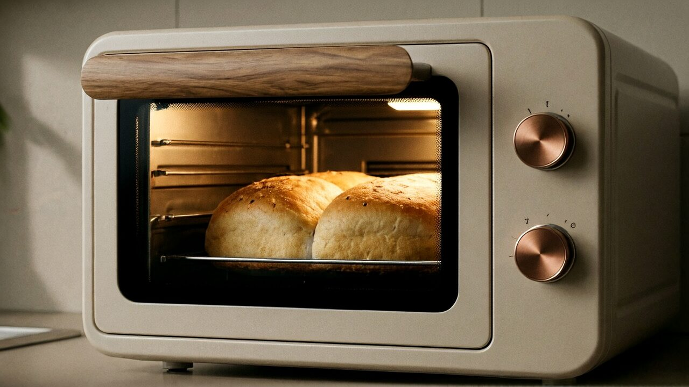
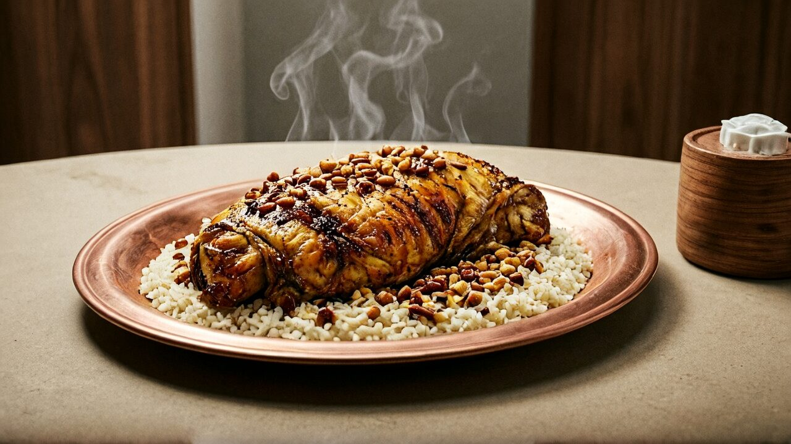
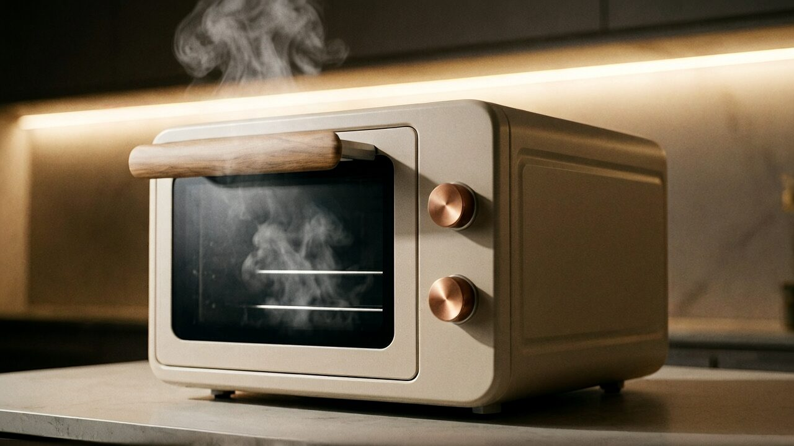
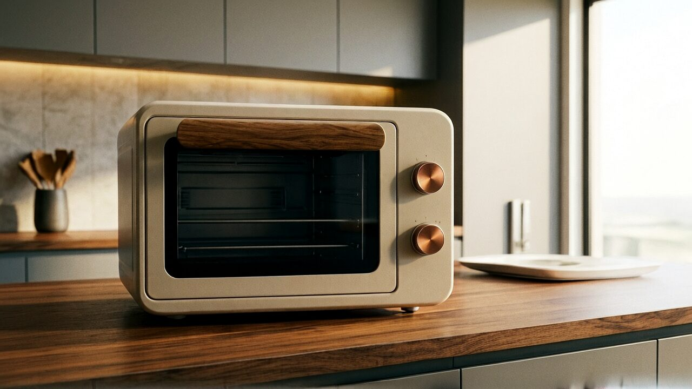
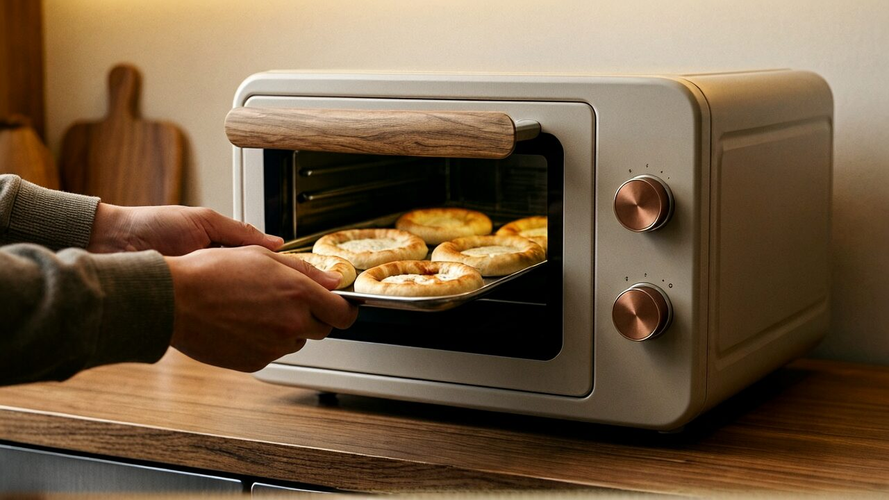
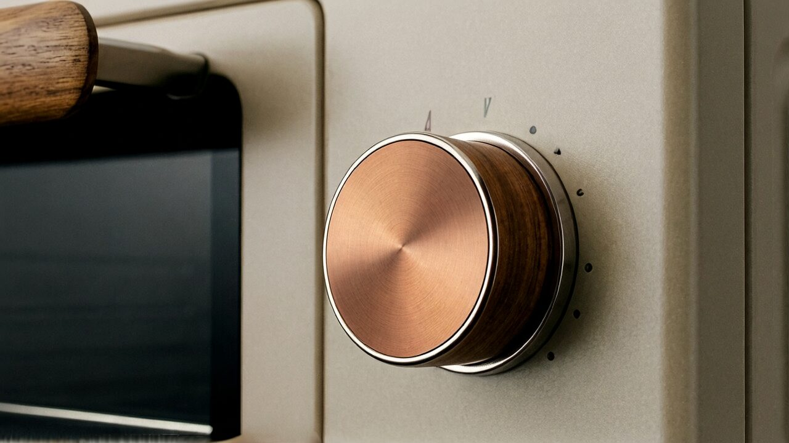
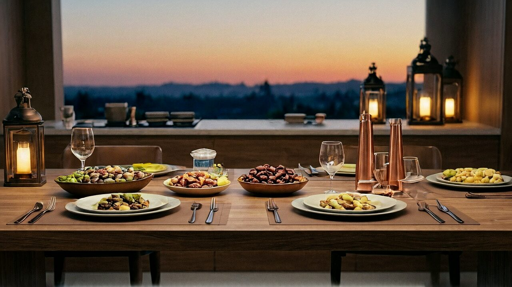

Programmes
One copper dial. Every dish.
Bake
220°
Bread that rises
Steam in the first minutes, dry heat at the end — a soft crumb and a crackling crust.



At home
Made to stay on the counter.



0programmes, from khubz to fish

For the table
Ready when the sun sets.
Set the time in the morning; TANNOUR starts on its own and keeps everything warm until the family sits down.